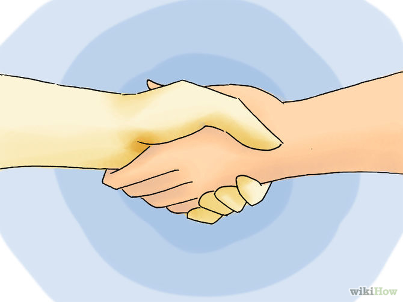
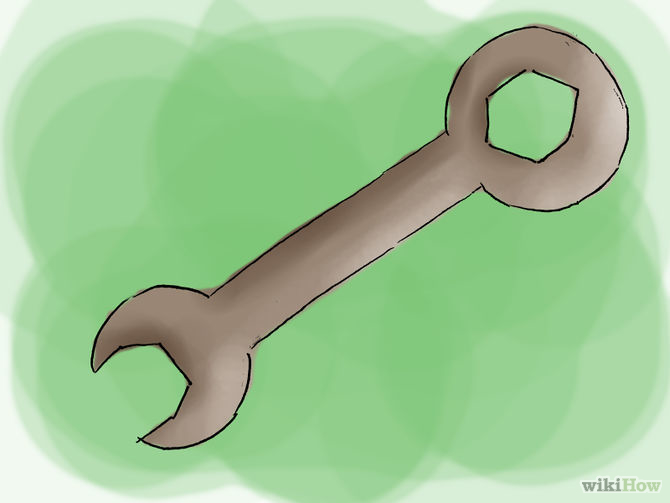
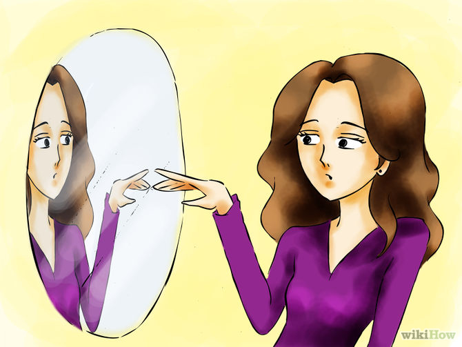
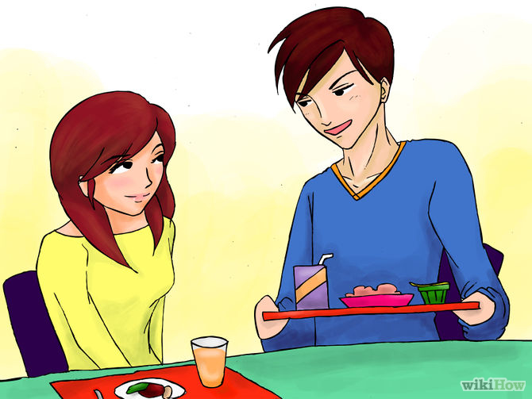
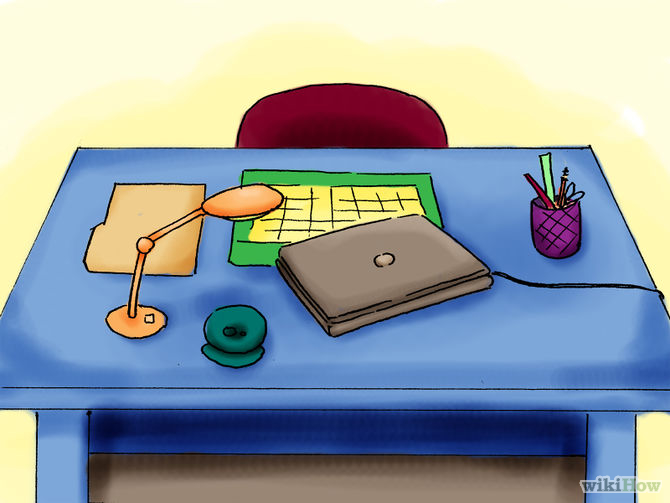
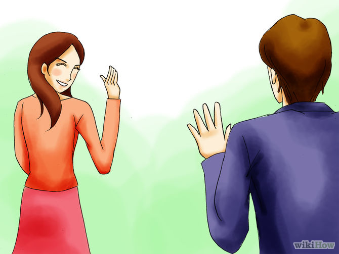

Antisocial behavior can mean different things in different contexts, so it's important to distinguish between the different senses of the word. Sometimes introverts need to disengage a bit from our social lives and live more solitary existences, while clinical antisocial behavior can be a more significant problem. Whether you think you're antisocial and want to be sure, or if you want to see what a more isolated existence is all about, you can learn how to enjoy spending time alone, how to limit your contact with others, and how to negotiate common social interactions that can be trouble for antisocial people.
Part 1 of 3: Understanding Antisocial Behavior
- Distinguish between introversion and anti-social behavior. The word "antisocial" is commonly used to describe the behavior of introverts, who may not often feel like socializing compared to more social extroverts. The clinical definition of antisocial behavior is somewhat different, however, making it important to distinguish between the two for an accurate understanding.
- Antisocial behavior is characterized in much the same way as psychopathy or sociopathy. Some studies report that harsh or inconsistent parenting can be a risk factor for antisocial behavior.[1] People who exhibit antisocial personalities tend to be cynical and unable to empathize with others, or recognize the suffering of others. Antisocial behavior is sometimes characterized by superficial charm, an inflated ego, and a general disdain for the feelings of other people.
- Introverted behavior is a sign of a normal social temperament, characterized by a preference for solitude. Introverts are task-oriented, and typically more engaged in solitary reflection and less engaged by interacting with others. While introverts may seem to display some of the superficial characteristics of antisocial behavior, there is no direct link between the two.
- Enjoy your private time. Being antisocial is basically just avoiding contact with people, and preferring your private time, spent alone. If you don't enjoy spending time alone, being antisocial is going to be pretty rough, if not impossible. While not all antisocial people are the same, or enjoy solitude for the same reasons, try to think about activities that you enjoy doing by yourself to figure out if you'll be able to make it work. Solitary activities may include:
- Reading
- Writing
- Playing an instrument
- Meditation
- Prayer
- Exercise
- Hiking
- Gardening
- Devote yourself to schoolwork, or your work. Usually, being antisocial is a by-product of being obsessed with other things and forgetting to socialize, or simply not having the time to socialize, not a goal in and of itself. But if you want to be less attached to your social commitments, the best and most productive way to do it is to throw your attention and your effort into school or work, and forget everything else.
- Instead of going home and chatting with friends on Facebook or going out, do your homework, or come up with new ideas for streamlining processes at work. Better yet, stay late at the office, or head to the library to study.
- Work-obsessions don't actually have to be work or school related. Find topics or hobbies that interest you and get lost in them. Spend your evenings building model trains or writing code or making synth epics instead of socializing.
- Be alone in public, occasionally. There's a difference between being antisocial and being a complete hermit. Unless you want to lose track of all social cues and become a total weirdo, it's good to spend some time in public, not socializing.
- Go to the library to sit and read the paper, instead of getting it delivered to your house. This is a solitary activity, but you can do it in public and get a little people-watching in to feel like you're not completely alone.
- Go out to eat occasionally and sit at the bar alone. Bring a book, if you're concerned about feeling embarrassed, even though there's no need to be sheepish.


Part 2 of 3: Being Antisocial
- Distinguish between introversion and anti-social behavior. The word "antisocial" is commonly used to describe the behavior of introverts, who may not often feel like socializing compared to more social extroverts. The clinical definition of antisocial behavior is somewhat different, however, making it important to distinguish between the two for an accurate understanding.
- Antisocial behavior is characterized in much the same way as psychopathy or sociopathy. Some studies report that harsh or inconsistent parenting can be a risk factor for antisocial behavior.[1] People who exhibit antisocial personalities tend to be cynical and unable to empathize with others, or recognize the suffering of others. Antisocial behavior is sometimes characterized by superficial charm, an inflated ego, and a general disdain for the feelings of other people
- Introverted behavior is a sign of a normal social temperament, characterized by a preference for solitude. Introverts are task-oriented, and typically more engaged in solitary reflection and less engaged by interacting with others. While introverts may seem to display some of the superficial characteristics of antisocial behavior, there is no direct link between the two.
- Speak less. When you are around people, in public, one of the best ways to communicate your desire to be alone is to be silent. Don't say anything at all, unless it's absolutely necessary, and even then try to limit your speech to the bare minimum of communication. Be like a Clint Eastwood character. Let your stare do the talking, then answer in monosyllables. 
- Focus on one-on-one interactions. It's unlikely that you'll be able to ever be truly solitary, but that doesn't mean you have to be a social butterfly. To keep your contacts as limited and controlled as possible, try to keep things one-on-one, as much as possible.
- Don't have birthday parties for yourself, spend time with a close friend, hanging out at home, or having dinner. If you're invited to a party, make contact with the host and tell them you can't come, but invite them for a one-on-one hang-out, if necessary.
- If you choose to date, make sure to be honest with people. If you're dating someone who likes to hang out with people on a regular basis, that might be a deal-breaker for both of you.
- Suspend your social network accounts. try to make sure there's as little web record of you as possible. Cancel or suspend your social networking accounts for the time being, and delete them if you're serious about this antisocial thing. 
- Figure out your own solution to problems. The less you need to rely on other people for help, the more you'll be able to rely on yourself. Be as self-sufficient as possible and endeavor to find your own solutions to your problems, instead of asking other people for help.Google is your friend. If you don't know how to do something, research it and try to figure it out on your own. At least get informed about topics before you take it to an expert, or someone who's more experienced.
- Know when to cut off relationships. In the movie Heat, Robert De Niro's bank robber likes to say that he doesn't have anything in his life he couldn't walk out on, if he saw the cops coming around the corner. If you want to live the solitary life, you've got to keep yourself unattached and distant. You might consider cutting off relationships when people get too close.
- Be a minimalist. To move around and stay as mobile as possible, try to limit your belongings as well as your social interactions. Think of it this way: the less shopping you do, and the less stuff you need, the less you'll need to be around people and deal with the consequences of all that stuff. Limit your buying and selling as much as you can. Simplify. 
- Stop apologizing. You don't need to apologize for yourself and the way you are, or position yourself underneath others socially. If you're introverted and prefer being alone instead of going to parties and socializing, you don't need to attempt to "change" your behavior or yourself. Don't apologize for the way you are.


Part 3 of 3: Negotiating Common Social Interactions
-

- Get through school. Negotiating your school career is a common problem for antisocial people. It's important to remember that you're not above your peers, your teachers, or anyone at your school. The more you can accept the things that make you alike, instead of focusing on the ways in which you're different, the easier getting through school will be. 
- Put your head down at work. The workplace can be another challenging environment for antisocial people. Having to deal with a variety of personalities and authority figures can tax anyone's social skills, especially if you prefer your own company. While lots of the specifics of negotiating your work day will have to do with your particular job, you can learn to do a few things to keep yourself happy and healthy. 
- Just make an appearance at parties, then leave. Big crowds of people yelling and dancing and screaming and taking selfies? Parties are a big bummer for introverts and antisocial people alike, and trying to negotiate invitations can cause stress and anxiety. Stop worrying about whether or not you'll let an acquaintance down by not showing up to the party because you want to stay home and read. Plan to make a quick stop in and then go back to doing what you want to do.
- Time pick-ups better to avoid awkward chats. If you pick up your kids from school and want to avoid awkward, pointless conversations with the other parents while you wait, just learn to time your trip better to avoid having to wait for long periods of time. Grab a coffee on your way to the school and show up the moment school lets out. Wait in your car until you see your child, then make up an excuse to get going.

Tips
- Being asocial doesn't mean you can't have SOME friends, no matter what the dictionary says. Try to find one or two good friends and stick with them.
- Some asocial people are being anti-social unwilling (these people tend to be naturally shy and keep things to themselves). Try finding someone like this in your classes (shouldn't be hard, they'll probably be the only ones who don't talk very much) and watching how they act. Don't be like a stalker or anything, but try to see what it is that makes people not bring them into a conversation.
Warnings
- Being anti-social can turn on you. The unpopularity can make the whole school hate you, and in turn destroy your emotions.
Back to top